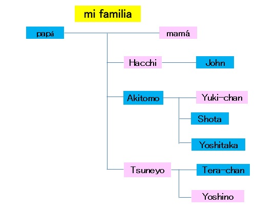

家族が集まって食事中、突然。。。

| 1 | Yoshitaka: | ¿Si no se usan por mucho tiempo las perforaciones para aretes, estarán cerradas? |
| 2 | Yoshino: | Sí, se cierran. ¿Por qué? |
| 3 | Yoshitaka: | Me quisiera hacer los piercings. |
| 4 | Yoshino: | ¡Qué asco! No me gustan los hombres con piercings. |
| 5 | Hacchi: | Puede ser que ahora no sea el momento, pero a mi edad, la impresión de los hombres con piercings es muy mala. |
| 6 | Tera-chan: | A veces entrevisto a personas que buscan trabajo, pero no quiero elegir a ningún hombre con piercings. |
| 7 | Yoshitaka: | Por eso espero que las perforaciones se me cierren antes de buscar trabajo. |
| 8 | mamá: | No me gustan los piercings. |
| 9 | Yoshino: | ¡Qué asco! No lo hagas. Solo te vas a encontrar con chicas yanquis. |
| 10 | John: | ¿Quieres una novia así? |
| 11 | Yoshitaka: | No, no quiero pero... |
| 12 | Yoshino: | Puede haber rastros de las perforaciones. Definitivamente no quiero que te hagas perforaciones. |
| 13 | Hacchi: | Aunque las perforaciones estén cerradas, el personal de la compañía investigará tus SNS anteriores. |
| 14 | Tsuneyo: | Encontrará las fotos de cuando hiciste el ridículo con piercings. |
| 15 | Akitomo: | De todos modos, en nuestra familia no nos perforamos. |
| 16 | Yoshitaka: | Entonces, voy a usar aretes de presión. |
| 17 | John: | Es mejor porque no necesitas hacerte perforaciones. |
| 18 | Akitomo: | Busca otras maneras de expresarte. |